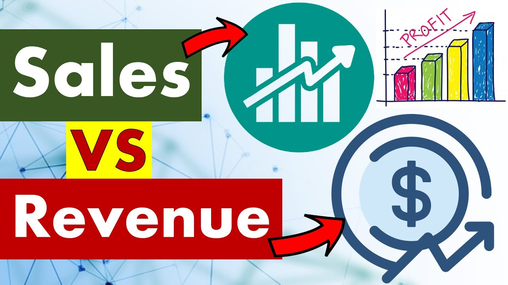
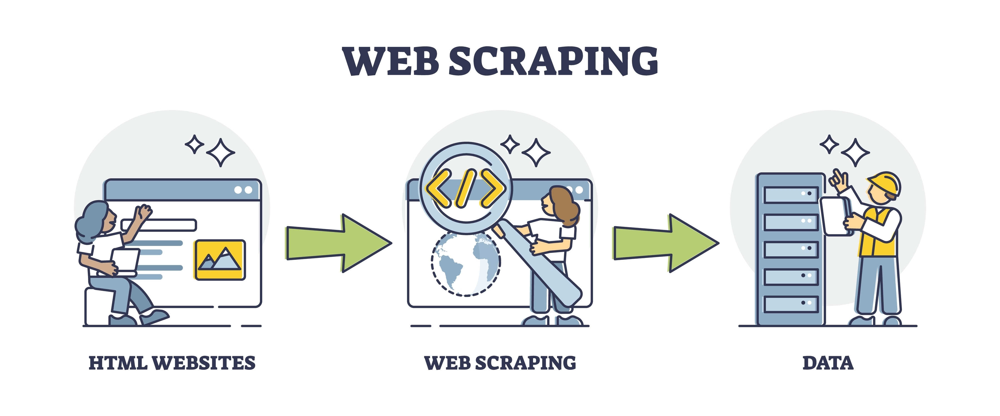

Hi there
Welcome to my Portfolio
Uche Justin Enudi Portfolio.
About Me
I am a dedicated and detail-oriented data analyst with a passion for transforming raw data into meaningful
insights. Armed with a strong background in data analysis and data visualization,
I thrive on unraveling complex patterns and trends. My expertise lies in utilizing advanced analytics tools
to extract actionable information, driving informed decision-making for organizations.
With a commitment to accuracy and a keen eye for data integrity, I am poised to contribute my analytical
skills to deliver impactful solutions in any data-driven environment.
PROJECTS.

Utilizing Tableau, I conducted a sales data analysis, comparing current-year performance with the previous year across states, regions, and managers in the U.S.
The project aimed to provide insights into sales and profit trends for informed decision-making.

In this project, I employed SQL to enhance the data quality of Nashville housing records. Using SQL,
I conducted data cleaning procedures to ensure accuracy and reliability in the housing dataset.
This approach contributed to a more refined and organized dataset for comprehensive analysis.

Utilizing Tableau, I analyzed the house sales dataset for King County in Washington, D.C.
during the years 2014-2015 in this project, providing a visually insightful exploration
of the real estate trends during that period. The interactive and dynamic features of
Tableau facilitated a comprehensive understanding of the sales data.

Utilizing Tableau, I analyzed the house sales dataset for King County in Washington, D.C.
during the years 2014-2015 in this project, providing a visually insightful exploration
of the real estate trends during that period. The interactive and dynamic features of
Tableau facilitated a comprehensive understanding of the sales data.

In conducting this sales versus profit analysis, I leveraged Excel to
delve into the sales dataset, extracting valuable insights.
Excel served as a powerful tool for exploring and interpreting
the data, facilitating a comprehensive understanding of the
relationship between sales and profit in the analysis.

In the exploration of insights within the customer care dataset, I employed Power BI as
the primary tool. Leveraging the capabilities of Power BI, I navigated through the
dataset to uncover valuable information and generate meaningful visualizations.
The utilization of Power BI proved instrumental in transforming raw data into
actionable insights for enhanced customer care strategies.

Leveraging Power BI, I conducted a comprehensive analysis of a survey specifically
targeted at professionals. The dynamic capabilities of Power BI allowed me to extract
meaningful insights, visualize trends, and present a cohesive overview of the survey data.
This analytical approach not only facilitated a deeper understanding of professionals'
perspectives but also enhanced the accessibility of key findings through interactive
and visually compelling reports.

Utilizing Python, I engaged in web scraping to extract data seamlessly from online sources.
The Python programming language, with its versatile libraries, enabled me to navigate web
pages, gather structured data, and automate the extraction process efficiently. This data
scraping initiative empowered me to collect valuable information from the web.
{kind=link}
{kind=link}